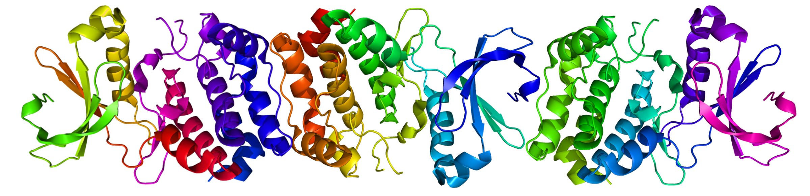

Of life’s macro molecules proteins are the most the most complex and varied in terms of function and structure. They can act as enzymes by catalyzing reactions, as structure or as messengers. Many of the most common modern illnesses are manifested as malformed, deficient or over abundant proteins. Even those diseases caused by germs often provoke a specific immune response that can by characterized by changes in protein quantity in the blood.
Given their importance it is no surprise that doctors and scientist would like to be able to measure the quantity of an arbitrary protein. Ideally this process would be generalizable and not rely on a specific quirt of one protein or another.
The main challenge associated with measuring proteins is there size. Given that they are molecules, it should come as no surprise that proteins are really small. They are too small to be effectively imaged as an assay, so other properties of the proteins must be measured. In addition, any sample taken contains a vast quantity of different types of proteins. A good assay must be able to ignore all this noise and pick up on the signal of the protein being analyzed.